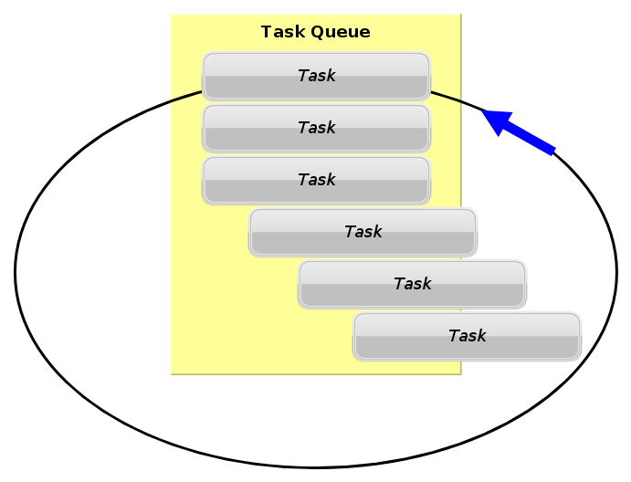
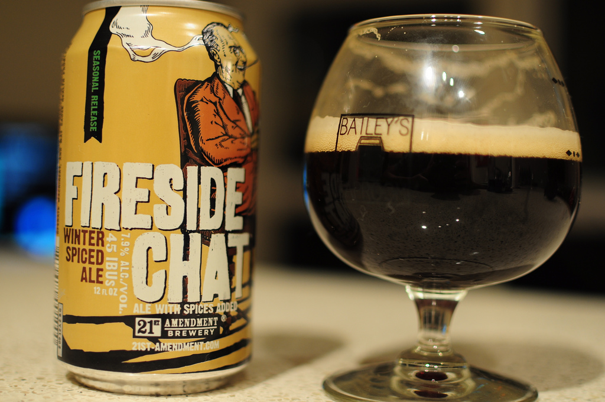
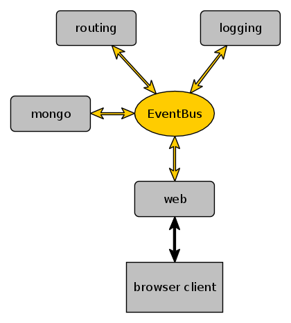
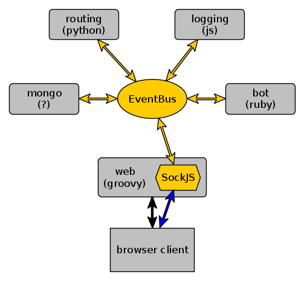

Building decoupled polyglot applications with
Toby Crawley
CodeMash 2014
What is Vert.x?
“Vert.x is a lightweight, high performance application platform for the JVM that's designed for modern mobile, web, and enterprise applications.”
What is Vert.x?
“Vert.x is a lightweight, high performance application platform for the JVM that's designed for modern mobile, web, and enterprise applications.”
Lightweight
Small distribution: 5 MB
Efficient with resources
Small, generally consistent API
What is Vert.x?
“Vert.x is a lightweight, high performance application platform for the JVM that's designed for modern mobile, web, and enterprise applications.”
High Performance
650,000 requests/second - http://bit.ly/vertxbench
Based on Netty - http://netty.io
Primarily asynchronous
Why Async?
Why Async?
What is Vert.x?
“Vert.x is a lightweight, high performance application platform for the JVM that's designed for modern mobile, web, and enterprise applications.”
Application Platform
Run multiple applications (Verticles) in one instance
Simple inter-component communication (EventBus)
Clustering
High Availability
Polyglot
Polyglot
- Java
- JRuby
- Jython
- JavaScript/CoffeeScript (Rhino, DynJS*, Nashorn*)
- Groovy
- Scala*
- PHP*
- Ceylon*
- Clojure*
(* in progress)
What is Vert.x?
“Vert.x is a lightweight, high performance application platform for the JVM that's designed for modern mobile, web, and enterprise applications.”
The JVM
A mature VM
Not just Java
Massive amount of libraries
What is Vert.x?
“Vert.x is a lightweight, high performance application platform for the JVM that's designed for modern mobile, web, and enterprise applications.”
Enterprise
Mobile, Enterprise
Mobile, Web, Enterprise
Mobile, Web, Enterprise
Many connections
Constrained resources (To The Cloud!)
Simple without being simplistic.
Reactor Loop
Reactor Loop(s)
Defaults to one/core
Verticle tied to one loop
Thread confinement
Distributed Event Bus
- Simple (String, int, byte[], etc) & structured (JSON) messages
- String-based addressing
- Publish/Subscribe
- Point-to-point
- Request/Response
- Clusterable (Hazelcast, browser)
- Transient
Sample App
Sample Application
(URL of sample app was here)
Sample Application
Sample Application
Features
- HTTP(S), TCP, UDP, WebSocket, SockJS servers
- HTTP(S), TCP, UDP, WebSocket, DNS clients
- Distributed Event Bus
- Timers
- Async FS
- SharedData
- Embeddable
Gains
- Efficient
- Distributed Event Bus
- Thread Safety
- Polyglot
- Clusterable
Losses
Language ecosystems
Async complexity
Don't block the reactor loop
Don't block…
Don't block the reactor loop
Thread.sleep()CountDownLatch.await()or any other blocking operating fromjava.util.concurrentwhile(true) {puts "King of the world!"}- Long-lived computationally intensive operations
- Blocking operations that might take some time to complete (e.g. DB query)
Worker Verticles
Runs on a thread pool, so can block.
Still thread-confined by default.
Resources
http://vertx.io / https://github.com/vert-x/
NoDyn - http://nodyn.io
Yoke - http://pmlopes.github.io/yoke/
Vert.x Module Registry - http://modulereg.vertx.io/
Takeaways
- Build application components in any (supported) language
- Decouple components with the EventBus
- Fast & efficient
- Async, but not always
Questions?

Credits
- "Utility Work at 12th and Vine" - http://www.flickr.com/photos/taestell/10366923794/
- Star Trek screencaps - http://tos.trekcore.com/
- "21st Amendment Fireside Chat" - http://www.flickr.com/photos/adambarhan/10585487705/
- Bacon quotes - http://thinkexist.com/quotes/with/keyword/bacon/
- "Three Mile Island" - http://www.flickr.com/photos/subindie/955633308
- "please raise hand for assistance" - http://www.flickr.com/photos/coldtaxi/426162862/